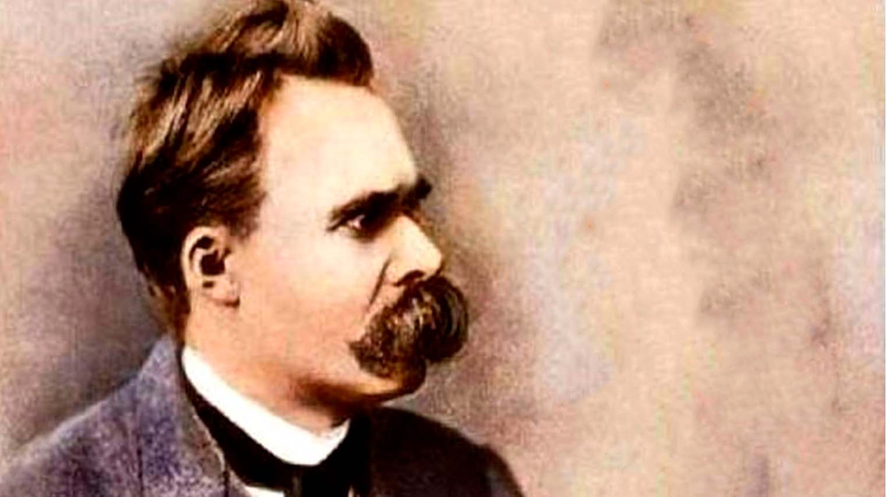
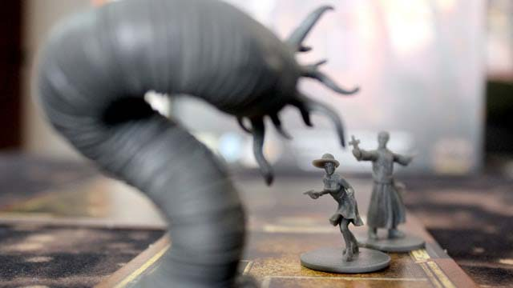
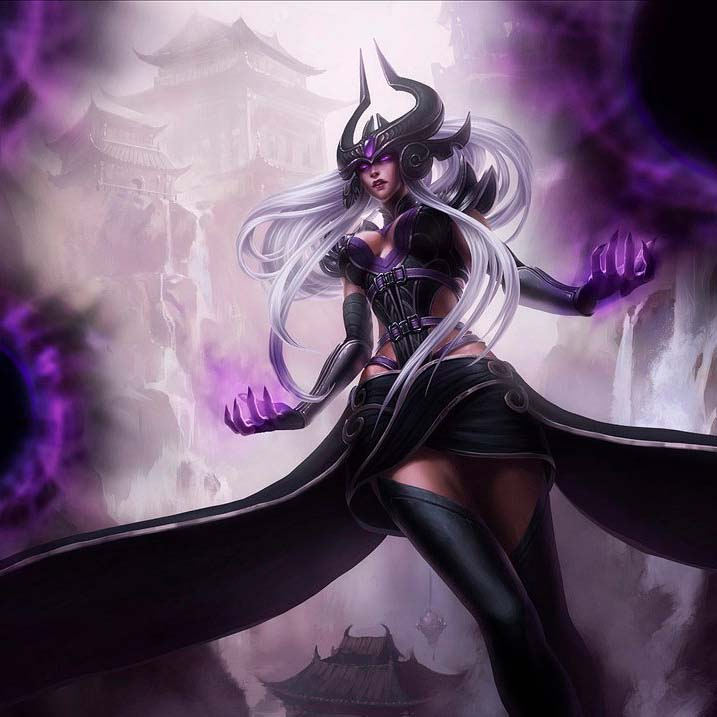
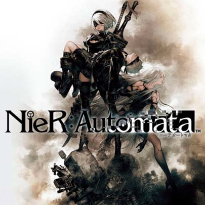
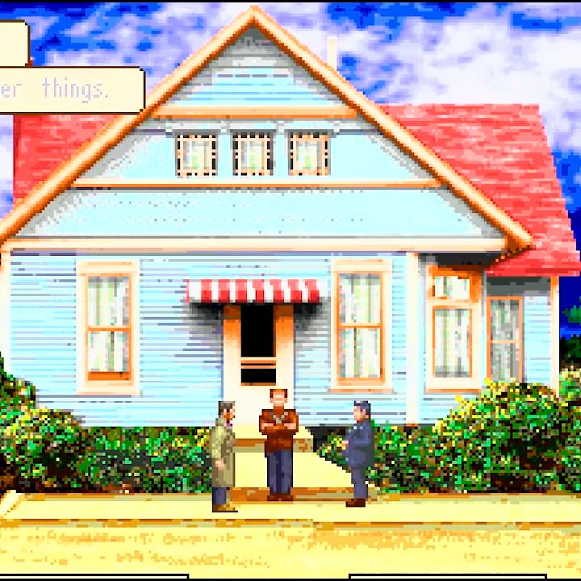
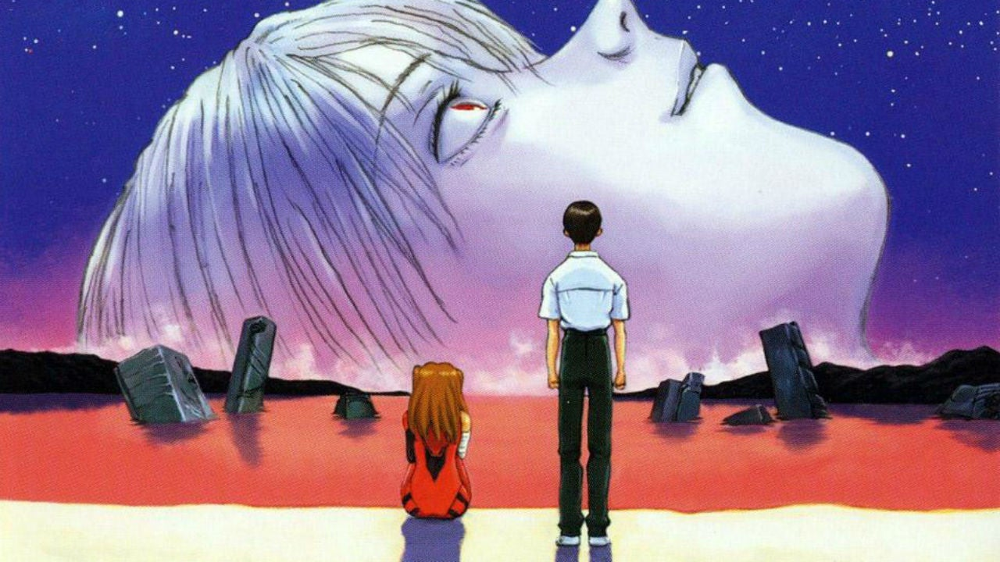
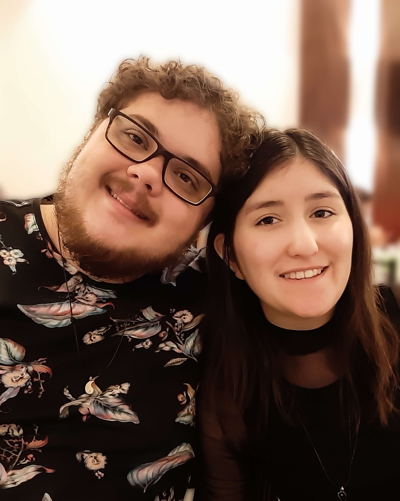

Olá, Mundo! Meu nome é Gabriel e vou contar um pouco de quem eu sou. Sempre me pergunta desse meu sobrenome estranho “Dovnorovzki”, é um sobrenome de origem Polonesa/Lituana; meus bisavós vieram da Lituânia fugindo da segunda guerra mundial. Tenho 27 anos, sou formado em audiovisual, moro em Valinhos (interior de SP). Sou extremament curioso pelos mais diversos assuntos, de astronomia à literatura, de artes à matemática. Para tentar entender minha visão de mundo: certo dia quis comprar um perfume, comecei minha pesquisa de forma comum até que certo ponto em um devaneio total percebi que tinha estudado todas as famílias olfativas, descobri uma premiação internacional (uma espécie de Oscar dos perfumes) e estava vendo um vídeo de uma pesquisa científica sobre como nosso cérebro responde aos estímulos olfativos. Meus amigos costumam me zoar dizendo que sou uma enciclopédia porque sempre sei falar algo sobre diversos assuntos.
Sou apaixonado por arte nas mais diversas formas. Sou músico e gosto muito de criar minhas próprias músicas, toco piano, violino e ocarina. Também estou começando a produzir música eletrônica.
Acesse meu canal no youtube para conhecer minhas composições e não se esqueça de se inscrever!
Cinéfilo de carteirinha, paixão pela qual me levou a fazer o curso de Audiovisual. Gosto muito de escrever poesias, histórias, roteiros. A leitura faz parte da minha rotina diária, gosto muito de histórias de terror e ficção científica.
Diretores e escritores favoritos:
| Literatura | Cinema |
|---|---|
| H. P. Lovecraft | Quentin Tarantino |
| Edgar Allan Poe | Stanley Kubrick |
| H. G. Wells | Lars von Trier |
| Aldous Huxley | Ingmar Bergman |
| Isaac Asimov | Guillermo del Toro |
No meu spotify você encontra nomes como:
Gosto muito de cozinhar, já fiz até cursos de formação em Chef de Cozinha e trabalhei por um tempo em um restaurante.
Gosto muito de ler a respeito de descobertas da Física, Astronomia, Biologia e trabalhos científicos no geral.
Atualmente estou tentando terminar de ler todas as obras de Nietzsche.
Costumo me reunir com meus amigos para jogar o bom e velho RPG de mesa. Agora nos tempos de pandemia estamos jogando online. O meu favorito e que gosto de escrever minhas próprias histórias é Call of Cthulhu.
Torço pra INTZ (time de LoL). Gosto de jogar League o Legends e MMO RPGS. De jogos solo meu gosto varia desde jogos Triple-A até jogos antigos Pixelados rodando em um simulador de DOS. Atualmente estou jogando Nier: Automata.
  Animes fazem parte da minha vida desde que me conheço por gente. Meus favoritos eternos são Neon Genesis Evangelion, Serial Experiments Lain e Ergo Proxy.
Tenho uma namorada maravilhosa com quem pretendo casar um dia, seu nome é Huara. Quero trabalhar na área de front-end e quem sabe em um futuro também com VR e AR. Gostaria muito de achar uma forma de combinar a área do audiovisual, design e programação; e assim me encontrar profissionalmente.
Espero aprender muito sobre programação e saber as melhores fontes de informações para continuar estudando mesmo depois de se formar. Algo que aprendi com meu curso de Audivisual é que o mais importante do curso todo foi que eu aprendi a estudar Audiovisual, não de fato que o curso ensine tudo, mas aprender a estudar aquela área é algo que acho muito mais valioso. Então, gostaria de aprender a estudar programação.